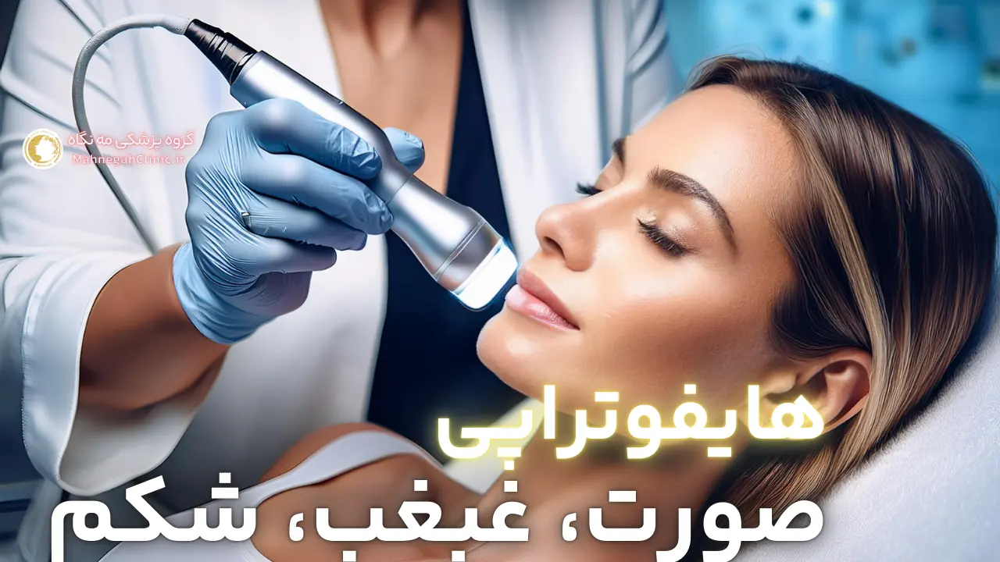
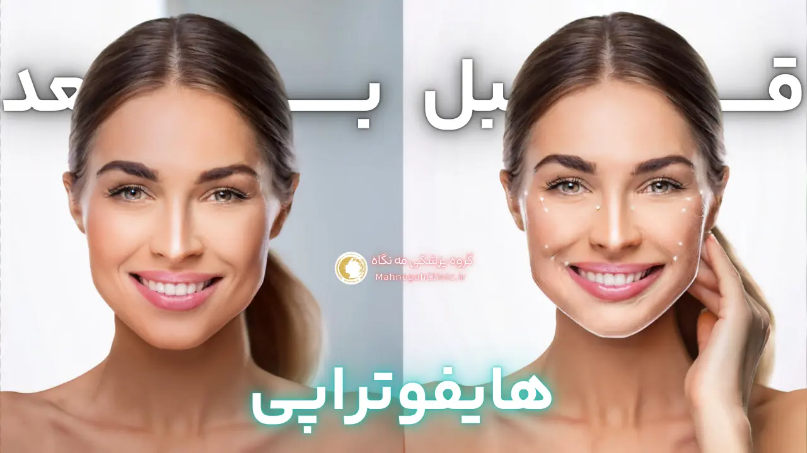
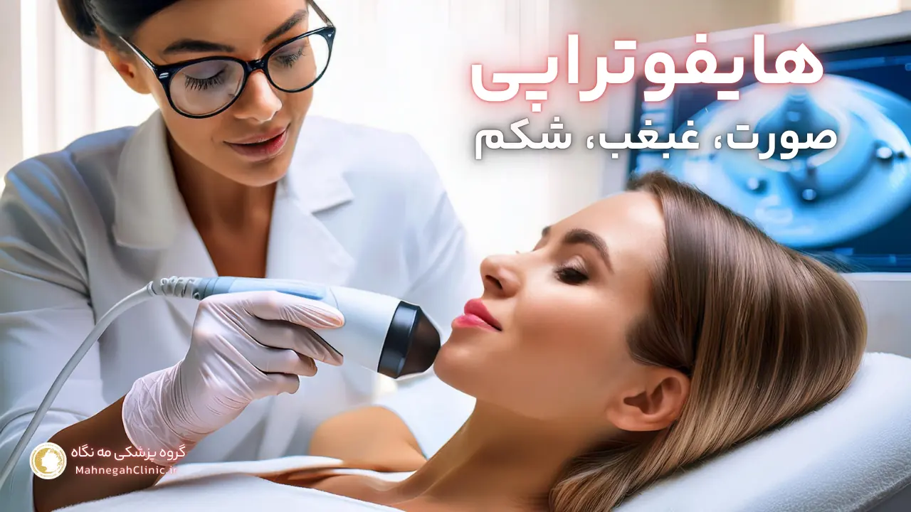
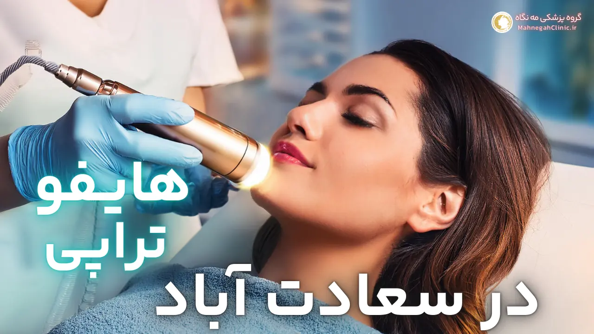

مزایای هایفوتراپی صورت
هایفوتراپی صورت یک روش غیرتهاجمی و موثر برای جوانسازی و زیباسازی پوست است که در مرکز هایفوتراپی سعادت آباد و دیگر مراکز معتبر ارائه میشود. این روش با استفاده از تکنولوژی هایفو، نتایج چشمگیری در بهبود ظاهر پوست ایجاد میکند و به شما کمک میکند تا اعتماد به نفس بیشتری داشته باشید. در ادامه، به برخی از مزایای کلیدی هایفوتراپی صورت اشاره میکنیم.
کاهش چین و چروک و خطوط ریز
یکی از مزایای برجسته هایفوتراپی صورت، کاهش قابل توجه چین و چروک و خطوط ریز است. با افزایش سن، تولید کلاژن در پوست کاهش مییابد و این امر منجر به ایجاد چین و چروک و افتادگی پوست میشود. هایفوتراپی با تحریک تولید کلاژن جدید، به پر کردن خطوط و چین و چروکها کمک میکند و پوستی صافتر و جوانتر را برای شما به ارمغان میآورد. این روش بهویژه در کاهش خطوط اخم، خطوط پیشانی و خطوط پنجه کلاغی موثر است.
سفت شدن و لیفت پوست صورت
هایفوتراپی با تحریک تولید کلاژن و الاستین، به سفت شدن و لیفت پوست صورت کمک میکند. این امر باعث میشود تا پوست شما جوانتر و شادابتر به نظر برسد و افتادگی پوست کاهش یابد. هایفوتراپی بهویژه در لیفت ابروها، گونهها و خط فک موثر است و به شما کمک میکند تا ظاهری جوانتر و جذابتر داشته باشید.
بهطورکلی، هایفوتراپی صورت یک روش ایمن و موثر برای جوانسازی پوست است که مزایای بسیاری را برای شما به همراه دارد. این روش بدون نیاز به جراحی و دوره نقاهت، نتایج طبیعی و ماندگاری را ارائه میدهد و به شما کمک میکند تا اعتماد به نفس بیشتری داشته باشید و از زیبایی خود لذت ببرید. اگر به دنبال یک روش غیرتهاجمی برای جوانسازی پوست خود هستید، هایفوتراپی میتواند یک گزینه عالی برای شما باشد.
کاربردهای هایفوتراپی در سعادت آباد
هایفوتراپی یک روش درمانی چندمنظوره است که برای بهبود وضعیت پوست در نواحی مختلف بدن استفاده میشود. در مرکز هایفوتراپی سعادت آباد، متخصصین ما با استفاده از تکنولوژی پیشرفته هایفو، خدمات متنوعی را در زمینه جوانسازی و لیفتینگ پوست ارائه میدهند. در ادامه به دو کاربرد مهم هایفوتراپی در این مرکز میپردازیم.
هایفوتراپی غبغب
غبغب یا افتادگی پوست زیر چانه، یکی از مشکلات رایج زیبایی است که میتواند باعث کاهش اعتماد به نفس افراد شود. هایفوتراپی غبغب یک روش غیرتهاجمی و موثر برای رفع این مشکل است. در این روش، امواج اولتراسوند با تمرکز بالا به لایههای چربی زیر چانه نفوذ کرده و باعث تخریب سلولهای چربی میشوند. همچنین، هایفوتراپی با تحریک تولید کلاژن، به سفت شدن و لیفت پوست در این ناحیه کمک میکند و ظاهری جوانتر و متناسبتر را برای شما به ارمغان میآورد.
هایفوتراپی شکم
افتادگی و شل شدن پوست شکم، یکی دیگر از مشکلات رایج زیبایی است که میتواند پس از بارداری، کاهش وزن شدید یا افزایش سن رخ دهد. هایفوتراپی شکم یک روش غیرجراحی برای سفت کردن و لیفت پوست در این ناحیه است. در این روش، امواج اولتراسوند با تمرکز بالا به لایههای عمیق پوست نفوذ کرده و باعث تحریک تولید کلاژن و الاستین میشوند. این امر منجر به سفت شدن و لیفت پوست شکم میشود و ظاهری صافتر و متناسبتر را برای شما ایجاد میکند.
مرکز هایفوتراپی سعادت آباد با بهرهگیری از تکنولوژی پیشرفته هایفو و متخصصین مجرب، آماده ارائه خدمات هایفوتراپی در نواحی مختلف بدن، از جمله صورت، غبغب و شکم است. با مراجعه به این مرکز، میتوانید از مزایای این روش درمانی بهرهمند شوید و ظاهری جوانتر و شادابتر را تجربه کنید.

چرا مرکز هایفوتراپی مه نگاه در سعادت آباد را انتخاب کنیم؟
با وجود تعدد مراکز ارائه دهنده خدمات زیبایی در سعادت آباد، انتخاب یک مرکز هایفوتراپی معتبر و حرفهای برای دستیابی به نتایج مطلوب و ایمن بسیار حائز اهمیت است. مرکز هایفوتراپی مه نگاه با تکیه بر تجربه و تخصص خود، بهترین خدمات را در زمینه هایفوتراپی به شما عزیزان ارائه میدهد. در ادامه به دلایلی که این مرکز را از سایرین متمایز میکند، اشاره میکنیم.
متخصصین مجرب و آموزش دیده
در مرکز هایفوتراپی مه نگاه، تیمی از متخصصین پوست و زیبایی با تجربه و آموزش دیده، آماده ارائه خدمات هایفوتراپی به شما هستند. این متخصصین با دانش و مهارت خود، بهترین روش درمانی را برای شما انتخاب کرده و با دقت و حساسیت بالا، فرآیند هایفوتراپی را انجام میدهند تا به نتایج مطلوب و طبیعی دست یابید.
استفاده از جدیدترین تکنولوژی هایفو
مرکز هایفوتراپی مه نگاه مجهز به جدیدترین و پیشرفتهترین دستگاههای هایفو است. این دستگاهها با دقت و قدرت بالا، امواج اولتراسوند را به لایههای عمیق پوست منتقل کرده و باعث تحریک کلاژنسازی و لیفتینگ پوست میشوند. استفاده از تکنولوژی روز دنیا، به ما این امکان را میدهد تا بهترین نتایج را در کمترین زمان ممکن برای شما به ارمغان آوریم.
علاوه بر این، مرکز هایفوتراپی مه نگاه با ارائه مشاوره رایگان و تخصصی، به شما کمک میکند تا بهترین تصمیم را برای جوانسازی و زیباسازی پوست خود بگیرید. ما به سلامت و رضایت شما اهمیت میدهیم و تمام تلاش خود را میکنیم تا تجربهای لذتبخش و موثر را برای شما فراهم کنیم. با انتخاب مرکز هایفوتراپی مه نگاه، میتوانید با اطمینان خاطر، به جوانی و زیبایی پوست خود بازگردید.
آمادگی برای هایفوتراپی
هایفوتراپی یک روش غیرتهاجمی است و نیاز به آمادگی خاصی ندارد، اما رعایت برخی نکات قبل و بعد از درمان میتواند به بهبود نتایج و کاهش عوارض جانبی کمک کند. در مرکز هایفوتراپی سعادت آباد، ما به شما توصیه میکنیم که قبل از انجام هایفوتراپی، با پزشک متخصص مشورت کنید و در مورد سوابق پزشکی و داروهای مصرفی خود صحبت کنید. همچنین، رعایت برخی نکات مراقبتی قبل و بعد از درمان میتواند به بهبود نتایج و کاهش عوارض جانبی کمک کند.
مشاوره اولیه با پزشک
قبل از انجام هایفوتراپی، یک جلسه مشاوره با پزشک متخصص در مرکز هایفوتراپی سعادت آباد برگزار میشود. در این جلسه، پزشک وضعیت پوست شما را بررسی کرده و در مورد اهداف و انتظارات شما از درمان صحبت میکند. همچنین، پزشک در مورد مزایا، معایب و عوارض جانبی احتمالی هایفوتراپی با شما صحبت کرده و به سوالات شما پاسخ میدهد. در صورتی که پزشک تشخیص دهد که هایفوتراپی برای شما مناسب نیست، ممکن است روشهای درمانی دیگری را به شما پیشنهاد دهد.
مراقبتهای قبل و بعد از هایفوتراپی
-
قبل از هایفوتراپی:
- از مصرف داروهای رقیقکننده خون مانند آسپرین و ایبوپروفن خودداری کنید.
- از قرار گرفتن در معرض نور خورشید و استفاده از سولاریوم خودداری کنید.
- پوست خود را تمیز و خشک نگه دارید.
- از مصرف محصولات آرایشی و بهداشتی سنگین خودداری کنید.
-
بعد از هایفوتراپی:
- از قرار گرفتن در معرض نور خورشید و استفاده از سولاریوم خودداری کنید و از کرم ضد آفتاب با SPF بالا استفاده کنید.
- از شستشوی صورت با آب داغ و استفاده از محصولات آرایشی و بهداشتی سنگین خودداری کنید.
- از ماساژ دادن یا فشار دادن ناحیه تحت درمان خودداری کنید.
- در صورت بروز هرگونه عارضه جانبی مانند قرمزی، تورم یا درد، با پزشک خود تماس بگیرید.
با رعایت این نکات ساده، میتوانید از نتایج مطلوب و ماندگار هایفوتراپی بهرهمند شوید و عوارض جانبی احتمالی را به حداقل برسانید. در مرکز هایفوتراپی سعادت آباد، ما تمام تلاش خود را میکنیم تا شما را در طول فرآیند درمان همراهی کنیم و به شما کمک کنیم تا به بهترین نتایج ممکن دست یابید.

هزینه هایفوتراپی در سعادت آباد
یکی از سوالات متداول افرادی که به دنبال جوانسازی پوست خود با روش هایفوتراپی هستند، هزینه این درمان است. هزینه هایفوتراپی در سعادت آباد و سایر مناطق میتواند تحت تأثیر عوامل مختلفی قرار بگیرد و به همین دلیل نمیتوان یک قیمت ثابت و مشخص برای آن تعیین کرد. در ادامه به برخی از عوامل موثر بر هزینه هایفوتراپی و مقایسه آن با سایر روشهای جوانسازی پوست میپردازیم.
عوامل موثر بر هزینه
- ناحیه تحت درمان: هزینه هایفوتراپی بسته به ناحیه تحت درمان متفاوت است. به عنوان مثال، هایفوتراپی صورت معمولاً هزینه بیشتری نسبت به هایفوتراپی غبغب دارد.
- تعداد جلسات درمانی: تعداد جلسات مورد نیاز برای دستیابی به نتایج مطلوب نیز بر هزینه هایفوتراپی تأثیر میگذارد. برخی افراد ممکن است تنها به یک جلسه نیاز داشته باشند، در حالی که برخی دیگر ممکن است نیاز به چندین جلسه درمانی داشته باشند.
- تخصص و تجربه پزشک: هزینه هایفوتراپی ممکن است بسته به تخصص و تجربه پزشک متفاوت باشد. پزشکان با تجربه و مهارت بالا ممکن است هزینه بیشتری دریافت کنند.
- نوع دستگاه هایفو: نوع دستگاه هایفو مورد استفاده نیز میتواند بر هزینه هایفوتراپی تأثیر بگذارد. دستگاههای جدیدتر و پیشرفتهتر ممکن است هزینه بیشتری داشته باشند.
- موقعیت جغرافیایی کلینیک: هزینه هایفوتراپی در مناطق مختلف شهر و کشور میتواند متفاوت باشد. کلینیکهای واقع در مناطق مرفه ممکن است هزینه بیشتری دریافت کنند.
مقایسه هزینه با سایر روشها
در مقایسه با سایر روشهای جوانسازی پوست مانند جراحی لیفت صورت، هزینه هایفوتراپی بهطور قابل توجهی کمتر است. همچنین، هایفوتراپی نیازی به بستری شدن در بیمارستان و دوره نقاهت طولانی ندارد، بنابراین هزینههای مربوط به این موارد نیز حذف میشوند. با این حال، هایفوتراپی ممکن است نسبت به برخی روشهای غیرتهاجمی دیگر مانند تزریق بوتاکس یا فیلر، هزینه بیشتری داشته باشد.
در نهایت، برای اطلاع دقیق از هزینه هایفوتراپی در سعادت آباد، بهتر است با مرکز هایفوتراپی مه نگاه تماس بگیرید و یک جلسه مشاوره رایگان رزرو کنید. در این جلسه، پزشک متخصص وضعیت پوست شما را بررسی کرده و بر اساس نیازهای شما، هزینه دقیق درمان را به شما اعلام میکند. همچنین، میتوانید در مورد روشهای پرداخت و تخفیفهای ممکن نیز سوال کنید.
سوالات متداول درباره هایفوتراپی
هایفوتراپی یک روش درمانی نوین و پرطرفدار است که سوالات زیادی را در ذهن علاقهمندان به زیبایی ایجاد میکند. در این بخش، به برخی از سوالات متداول درباره هایفوتراپی پاسخ میدهیم تا شما را با این روش درمانی بیشتر آشنا کنیم.
آیا هایفوتراپی درد دارد؟
یکی از نگرانیهای رایج در مورد هایفوتراپی، میزان درد آن است. خوشبختانه، هایفوتراپی یک روش غیرتهاجمی و کمدرد است. برخی افراد ممکن است در طول درمان احساس گرما یا سوزش خفیفی داشته باشند، اما این احساس معمولاً قابل تحمل است و نیازی به استفاده از بیحسی ندارد. در صورتی که تحمل درد شما کم است، میتوانید قبل از درمان با پزشک خود در مورد استفاده از کرم بیحسی موضعی مشورت کنید.
چه مدت طول میکشد تا نتایج هایفوتراپی را ببینم؟
نتایج هایفوتراپی معمولاً بلافاصله پس از درمان قابل مشاهده هستند، اما بهترین نتایج در طول 2 تا 3 ماه پس از درمان ظاهر میشوند. این به این دلیل است که تولید کلاژن جدید در پوست زمان میبرد. نتایج هایفوتراپی میتوانند تا یک سال یا بیشتر ماندگار باشند، اما برای حفظ نتایج، ممکن است نیاز به جلسات درمانی تکمیلی داشته باشید.
علاوه بر این دو سوال، ممکن است سوالات دیگری نیز در مورد هایفوتراپی داشته باشید، مانند:
- آیا هایفوتراپی برای همه افراد مناسب است؟
- عوارض جانبی هایفوتراپی چیست؟
- چه مدت طول میکشد تا به فعالیتهای عادی خود بازگردم؟
برای پاسخ به این سوالات و کسب اطلاعات بیشتر در مورد هایفوتراپی، میتوانید با مرکز هایفوتراپی مه نگاه در سعادت آباد تماس بگیرید و یک جلسه مشاوره رایگان رزرو کنید. متخصصین ما آماده پاسخگویی به تمام سوالات شما هستند و به شما کمک میکنند تا بهترین تصمیم را برای جوانسازی پوست خود بگیرید.

هایفوتراپی: بهترین انتخاب برای جوانسازی پوست در غرب تهران
در دنیای پرشتاب امروز، حفظ جوانی و شادابی پوست به یکی از دغدغههای اصلی افراد تبدیل شده است. هایفوتراپی به عنوان یک روش غیرتهاجمی و موثر، به شما کمک میکند تا بدون نیاز به جراحی و دوره نقاهت طولانی، به پوستی جوانتر و شادابتر دست یابید. در غرب تهران، مرکز هایفوتراپی سعادت آباد با بهرهگیری از تکنولوژی پیشرفته و متخصصین مجرب، بهترین خدمات را در زمینه هایفوتراپی به شما عزیزان ارائه میدهد.
نتایج ماندگار و طبیعی
یکی از مزایای برجسته هایفوتراپی، نتایج ماندگار و طبیعی آن است. برخلاف برخی روشهای جوانسازی پوست که نتایج موقتی دارند، هایفوتراپی با تحریک کلاژنسازی در لایههای عمیق پوست، نتایجی را ایجاد میکند که میتوانند تا یک سال یا بیشتر ماندگار باشند. همچنین، هایفوتراپی به دلیل عدم ایجاد تغییرات مصنوعی در چهره، نتایجی طبیعی و هماهنگ با سایر اجزای صورت شما ایجاد میکند.
جایگزین ایمن برای جراحیهای زیبایی
هایفوتراپی یک جایگزین ایمن و کمعارضه برای جراحیهای زیبایی مانند لیفت صورت است. این روش بدون نیاز به بیهوشی، برش و بخیه انجام میشود و خطر عفونت، خونریزی و سایر عوارض جراحی را ندارد. همچنین، هایفوتراپی نیازی به دوره نقاهت طولانی ندارد و شما میتوانید بلافاصله پس از درمان به فعالیتهای روزمره خود بازگردید.
اگر در غرب تهران به دنبال یک روش ایمن، موثر و کمعارضه برای جوانسازی پوست خود هستید، هایفوتراپی میتواند بهترین انتخاب برای شما باشد. با مراجعه به مرکز هایفوتراپی سعادت آباد، میتوانید از مزایای این روش درمانی بهرهمند شوید و به پوستی جوانتر، شادابتر و زیباتر دست یابید.
بهترین دستگاه هایفوتراپی صورت
در دنیای پر رقابت تکنولوژی های زیبایی، انتخاب بهترین دستگاه هایفوتراپی صورت میتواند چالش برانگیز باشد. هر دستگاه با ویژگیها و قابلیتهای خاص خود، نتایج متفاوتی را ارائه میدهد. در این بخش، به بررسی ویژگیهای یک دستگاه خوب هایفوتراپی میپردازیم و برخی از دستگاههای محبوب را مقایسه میکنیم تا به شما در انتخاب بهترین گزینه برای نیازهایتان کمک کنیم.
ویژگیهای یک دستگاه خوب هایفوتراپی
- عمق نفوذ: یک دستگاه خوب هایفوتراپی باید قابلیت نفوذ به لایههای مختلف پوست را داشته باشد. این به شما امکان میدهد تا نواحی مختلف صورت را با دقت و اثربخشی درمان کنید.
- دقت و کنترل: دستگاه باید دارای سیستم هدفگیری دقیق باشد تا بتوانید انرژی را به طور دقیق به نواحی مورد نظر برسانید و از آسیب به بافتهای اطراف جلوگیری کنید.
- ایمنی: دستگاه باید دارای سیستمهای ایمنی پیشرفته باشد تا از سوختگی و سایر عوارض جانبی جلوگیری کند.
- راحتی بیمار: دستگاه باید دارای طراحی ارگونومیک باشد تا در طول درمان برای بیمار راحت باشد. همچنین، دستگاه باید دارای سیستم خنککننده باشد تا درد و ناراحتی را به حداقل برساند.
- نتایج بالینی: دستگاه باید دارای نتایج بالینی اثبات شده باشد که اثربخشی آن را در لیفت و سفت کردن پوست نشان دهد.

سوالات متداول
1. آیا هایفوتراپی دردناک است؟خیر، هایفوتراپی یک روش غیرتهاجمی است و اکثر افراد در طول درمان تنها احساس گرما یا سوزش خفیفی دارند.
2. چه مدت طول میکشد تا نتایج هایفوتراپی را ببینم؟نتایج اولیه بلافاصله پس از درمان قابل مشاهده هستند، اما بهترین نتایج طی 2 تا 3 ماه و با تولید کلاژن جدید، ظاهر میشوند.
3. آیا هایفوتراپی برای همه مناسب است؟هایفوتراپی برای اکثر افراد بالای 30 سال که دارای افتادگی خفیف تا متوسط پوست هستند، مناسب است. با این حال، بهتر است قبل از درمان با پزشک مشورت کنید.
4. عوارض جانبی هایفوتراپی چیست؟عوارض جانبی هایفوتراپی معمولاً خفیف و موقتی هستند و ممکن است شامل قرمزی، تورم یا حساسیت خفیف در ناحیه درمان باشد.
5. هر چند وقت یک بار باید هایفوتراپی را تکرار کنم؟نتایج هایفوتراپی میتوانند تا یک سال یا بیشتر ماندگار باشند، اما برای حفظ نتایج، ممکن است نیاز به جلسات درمانی تکمیلی سالیانه یا هر دو سال یکبار داشته باشید.